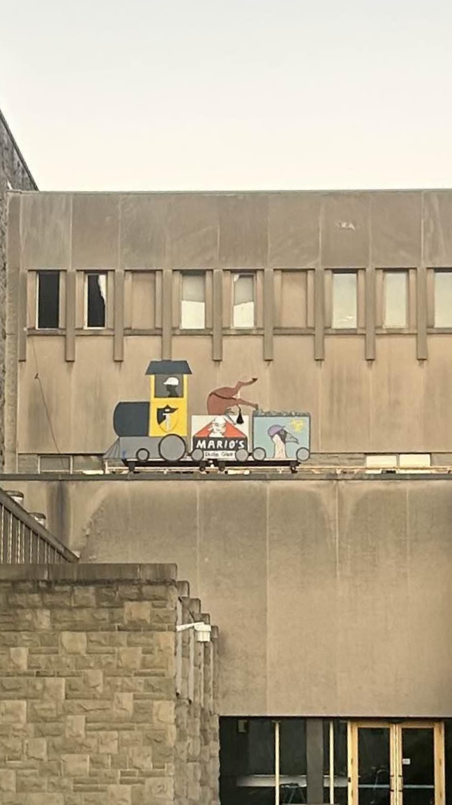
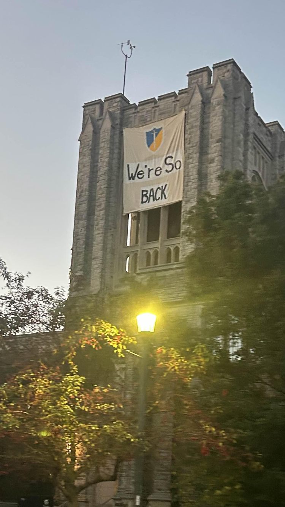
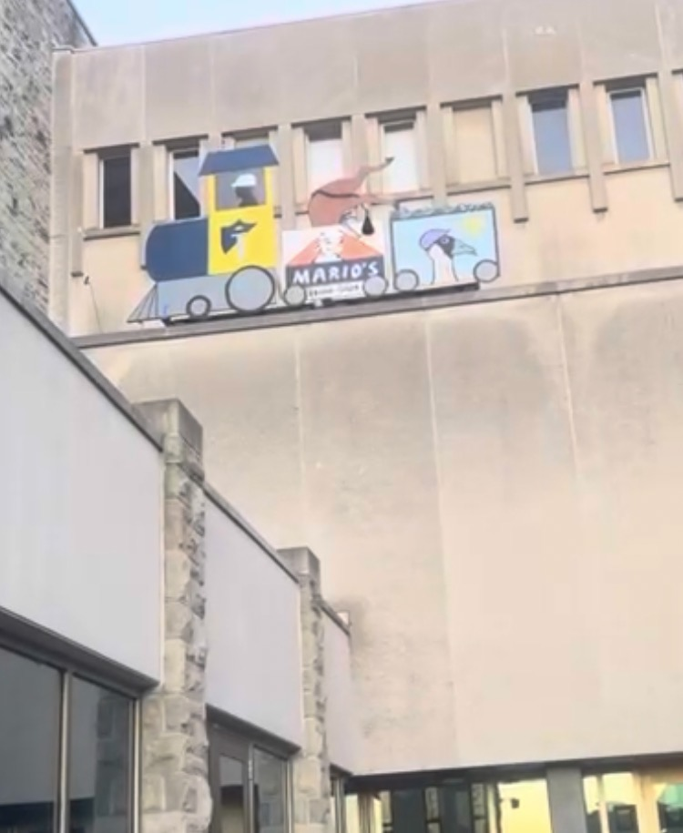

On November 1st, the Brute Force Committee added two additions to the roof of the Spencer Engineering Buildign at Western University: A banner reading "We're So BACK" and a train that moved back and forth across the roof. The banner faced north, while the train faced east and overlooked the quad area.

The train featured a figure dressed in all black with a white hard hat as the conductor and the Brute Force Committee logo on the first train car. The second car of the train displayed the words "Mario's Skule Glue" on it and had the hind legs of a horse protruding from the top. It also had "horse caulk" near the legs of the horse. The final car contained coal, and a goose with a purple hard hat and a radioactive symbol was painted on the side. The train moved back and forth on the roof, emitting train whistle sounds, and finally playing a train crash sound effect when it reached the end of the track.

The banner contained the Brute Force Committee logo over the words "We're So BACK."
The banner was taken down before 12:00 on October 1st but the train stayed on the roof until some point before ll:00 on October 2nd.
